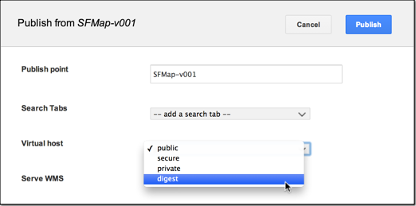

Google Earth Enterprise Documentation Home | GEE Server administration
Manage virtual hosts
A virtual host combines Apache virtual host functionality with publisher mapping within GEE Server so that you can publish your databases securely. You create and register a virtual host in GEE Server, assign a security protocol to it, and then associate multiple databases, including portable globes and maps, with that single virtual host. Add another virtual host when you want to use a different authentication and to associate different databases.
For example, you may have one or two security protocols but many databases and portable files to publish. Once you’ve created a virtual host for each security protocol and set up the appropriate authentication, you can associate different databases and portable globes and maps with the different virtual hosts, depending on the security protocols you need to apply.
You can also use the default virtual host configurations provided with GEE Server.
See Configure GEE Server 5.1.0 for SSL/HTTPS to add virtual hosts for HTTPS servers.
See geserveradmin in the Command Reference for information about all the virtual host commands.
Note: You may configure a virtual server in Apache using standard virtual host directives but it won’t be capable of hosting a GEE database until it is registered using geserveradmin, as described in Create and register a virtual host in GEE Server.
- Default virtual hosts
- Create and register a virtual host in GEE Server
- Configure virtual hosts with a custom port number
- Associate a database with a virtual host
- Naming virtual hosts
Default virtual hosts
By default, GEE Server has two registered virtual hosts: public and secure. The secure virtual host is a protected virtual host with basic authentication. The default credentials are:
- Username: geeuser
- Password: geeuser
To reset the username and password:
sudo /opt/google/gehttpd/bin/htpasswd /opt/google/gehttpd/conf.d/virtual_servers/.vhpasswd geeuser
The public virtual host is unprotected and does not require any authentication.
Create and register a virtual host with digest authentication
You create and register a virtual host using the geserveradmin --addvh command. This action results in a location-based virtual host for which you can configure authentication and create a password for a given user name. The following example shows how to set up digest authentication, one of the standard authentication types (AuthType) provided by Apache server. See Apache HTTP Server 2.2 htdigest.
In GEE 4.4, virtual hosts were previously called virtual servers. Now, in GEE 5.x, virtual hosts specify a security protocol only and can also be associated with multiple published globes and maps. This change decouples the task of setting up security protocols from publishing maps and globes.
To create and register a virtual host with digest authentication:
- Create and register virtual host in GEE Server using the
geserveradmincommand:
/opt/google/bin/geserveradmin --addvh digest [--vhurl <url>] [--vhcachelevel <level>]
geserveradmin creates the default location-based virtual host digest_host.location in /opt/google/gehttpd/conf.d/virtual_servers and registers it in GEE Server.
The vhurl specifies the location of the virtual host. It must match the corresponding server-side virtual host configuration.
digest_host.location to set up authentication.To set up digest authentication:
- Edit the
digest_host.locationfile to set up the authentication configuration:cd /opt/google/gehttpd/conf.d/virtual_servers
sudo vi digest_host.location - Add the following content to the
digest_host.locationfile:# The digest virtual host.
RewriteEngine on<Location /digest_host/>
SetHandler fdb-handler
AuthType Digest
AuthName "Private"
AuthDigestProvider file
AuthUserFile /opt/google/gehttpd/conf.d/virtual_servers/.htdigest
Require valid-user
</Location> - Create the password with a given user name using the password path that you specified in the
digest_host.locationfile:sudo htdigest -c /opt/google/gehttpd/conf.d/virtual_servers/.htdigest Private usernamesudo chmod 755 /opt/google/gehttpd/conf.d/virtual_servers/.htdigest#Enter password twice at prompt - Restart
geserverafter virtual host settings have been modified.sudo /etc/init.d/geserver restart - Run
geserveradminon the command line, in this example, adding a virtual hostmy_custom_port_sslwith a virtual host URL and custom port number:# geserveradmin —addvh —ssl my_custom_port_ssl —vhurl https://myservername.com:4343 - Change the extension of the newly created
my_custom_port_ssl.location_sslconfiguration file to differentiate from any default port (443) SSL virtual hosts you may have configured:<Apache path>/conf.d/virtual_servers/my_custom_port_ssl.location_ssl_custom - Then manually add the Include directives for your custom port virtual host to the SSL configuration file for Apache server,
/opt/google/gehttpd/conf/extra/httpd-ssl.conf:<VirtualHost _non_default_:4343>
# Include all SSL location-based virtual servers with custom port 4343.
Include conf.d/virtual_servers/*.location_ssl_custom
</VirtualHost> - Restart GEE Server:
sudo /etc/init.d/geserver restart
Configure virtual hosts with a custom port number
You may need to configure a virtual host to use a custom port number, commonly to differentiate from any default port (http:80, https:443) setting you may be using or when standard port numbers are being used for other purposes. With some edits to your Apache configuration files, you can set up custom port numbers for any location-based virtual host.
When creating a location-based virtual host with a custom port number, you need to rename and manually include the newly created location file, *.location or *.location_ssl in <Apache path>/conf.d/virtual_servers/ into the corresponding <Virtual Host> section of the Apache configuration file and restart GEE server.
To add a virtual host with a custom port number configured for SSL:
Associate a database with a virtual host
To associate a database or portable globe or map with a virtual host, you specify the virtual host when you publish in GEE Server.

See Publishing databases and portables.
Naming virtual hosts
Virtual hosts on GEE Server are “name-based,” meaning that you can have multiple “names” that serve assets running on a single IP address. With name-based virtual hosting, GEE Server relies on the client to report the host name as part of the HTTP headers. Using this method, many different hosts can share the same IP address.
Although usage of the virtual host names is hidden, reusing the name for other assets being served can cause conflicts. To that end, GEE Server checks the target path when you create a virtual host against reserved words and virtual host paths already registered in system, but does not check the virtual host name itself. Here is the list of reserved words that we check against: "fdb", "htdocs", "admin", "cutter", "earth", "icons", "js", "maps", "portable", "shared_assets."